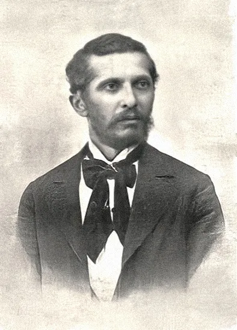

Foto
Rreth Naim Frashërit
Naim Frashëri është një nga figurat përfaqsuese të Rilindjes Kombëtare Shqiptare. Ai ishte poet, mendimtar, ideolog dhe mësues i popullit shqiptar në kohët më të vështira të tij. Naim Frashëri lindi më 25 maj 1846 në Frashër, Përmet. Ai rridhte nga një familje bejlerësh, dhe mori mësimet e para në arabisht, persisht dhe turqisht nga hoxha dhe bektashinjtë, të cilëve u përkiste familja e tij. Në vitin 1865, pas vdekjes së të atit, u shpërngul në Janinë, ku ndoqi gjimnazin grek “Zosimea” bashkë me Samiun. Aty u njoh me filozofinë dhe letërsinë klasike greke e romake. Më 1870 shkoi në Stamboll për punë, por u kthye në vendlindje për shkak të sëmundjes së mushkërive. Në vitin 1876 u bashkua me vëllezërit Abdylin dhe Samiun në Janinë dhe ndoqi nga afër veprimtarinë politike e kulturore të shqiptarëve. Pas katër vjetësh, botoi në Bukuresht poemthin e parë në shqip, “Shqipëria”, një manifest politik dhe poetik i Lidhjes së Prizrenit. Pas shtypjes së Lidhjes, Abdyli u arrestua dhe Naimi u vu nën kontrollin e policisë osmane. Për këtë arsye, ai u shpërngul me familjen në Stamboll, ku bashkëpunoi ngushtë me Samiun për çështjen shqiptare. Vdiq më 19 tetor 1900 në Stamboll dhe sot eshtrat e tij prehen në Tiranë.
Informacion i rëndësishëm
- Naim Frashëri (1846-1900)
- Lindi: 25 Maj 1846, Frashër, Shqipëri
- Vdiq: 20 Tetor 1900, Stamboll, Perandoria Osmane
- Profesioni: Poet, shkrimtar, rilindës, përkthyes, filozof
- Lëvizja letrare: Rilindja Kombëtare Shqiptare
- Gjuha e shkrimit: Shqip, osmanisht, persisht
- Familja: Pjesë e familjes së njohur Frashëri; vëllezërit e tij ishin Sami Frashëri dhe Abdyl Frashëri
Arsimi dhe Karriera
- Studioi në gjimnazin Zosimea në Janinë.
- U edukua në osmanisht, persisht, arabisht dhe frëngjisht.
- Shërbeu si nëpunës shtetëror në Perandorinë Osmane, por gjithmonë mbeti i përkushtuar ndaj çështjes kombëtare shqiptare.
Veprat Kryesore
- "Bagëti e Bujqësia" – Poemë epike mbi natyrën dhe jetën rurale shqiptare.
- "Histori e Skënderbeut" – Vepër patriotike mbi heroin kombëtar.
- "Lulet e Verës" – Poezi me motive lirike, patriotike dhe filozofike.
- "Qerbelaja" – Poemë fetare mbi betejën e Qerbelasë.
- "Fjalët e Qiririt" – Poezi alegorike mbi sakrificën për kombin.
- "Dëshira e Vërtetë e Shqiptarëve" – Shkrim politik mbi nevojën për pavarësi.
- Përktheu vepra nga persishtja dhe frëngjishtja në shqip.
Kontributi në Çështjen Kombëtare
- Një nga udhëheqësit e Rilindjes Kombëtare Shqiptare.
- Hartues i alfabetit të Stambollit (1879), një nga alfabetet e para të shqipes.
- Mbështeti Lidhjen e Prizrenit (1878) dhe idenë e një Shqipërie të pavarur.
- Promovoi arsimimin në gjuhën shqipe.
Ndikimi dhe Trashëgimia
- Një nga shkrimtarët më të mëdhenj shqiptarë dhe "Poeti Kombëtar i Shqipërisë".
- Inspirues i shumë shkrimtarëve dhe patriotëve shqiptarë në shekullin XX.
- Figura e tij ndodhet në kartëmonedhën shqiptare prej 200 lekësh.
- Teatri Kombëtar i Operas dhe Baletit në Tiranë mban emrin e tij.
- Veprat e tij studiohen në shkolla dhe janë pjesë e identitetit kombëtar shqiptar.
Citate nga Naim Frashëri
"Ti Shqipëri më jep nder, më jep emrin shqiptar."
"Dituria është drita që ndriçon shpirtin dhe mendjen."
"Shqipëria është një shpirt i fuqishëm dhe i lashtë, i cili nuk mund të vdesë."Ky citat shpreh besimin e Naim Frashërit te fuqia dhe qëndrueshmëria e kombit shqiptar, edhe në periudha të vështira.
"Atdheu është më i shtrenjtë se jeta."Ky citat pasqyron dashurinë e thellë të Frashërit për Shqipërinë dhe përkushtimin e tij ndaj çështjes kombëtare.
"Po të kesh atdhe, kesh gjithçka."Naim Frashëri nënvizon se atdheu është themeli i të gjitha vlerave dhe realizimeve të një kombi.
"Kush do të shikojë me sy të thellë, ai do të shohë se Shqipëria është një bijë e madhe e kulturës."Ky citat reflekton besimin e Naim Frashërit se Shqipëria ka një trashëgimi të pasur kulturore dhe historike.
"Kushdo që nuk e do gjuhën e tij, ai e ka shitur atdhenë."Ky citat tregon përkushtimin e Naim Frashërit për mbrojtjen dhe përhapjen e gjuhës shqipe si një element thelbësor të identitetit kombëtar.
"Njeriu është i fortë kur nuk humbet shpresën, është i fortë kur lufton për idealet e tij."Frashëri nënvizon se fuqia e një individi është e lidhur me forcën e shpirtit dhe betejat që ai zhvillon për të arritur qëllimet e tij më të larta.
"Po të dashurosh atdhenë, dashuron gjithçka që është e shenjtë për njeriun."Ky citat flet për lidhjen e thellë që një individ duhet të ketë me vendin e tij, ku atdheu dhe vlerat që ai përfaqëson janë më të shenjta se çdo gjë tjetër.
"Shkolla është buka e diturisë dhe shpresa e shpëtimit për një komb."Ky citat pasqyron rëndësinë që Naim Frashëri i jepte arsimit dhe edukatës si mjet për ngritjen e kombit shqiptar.